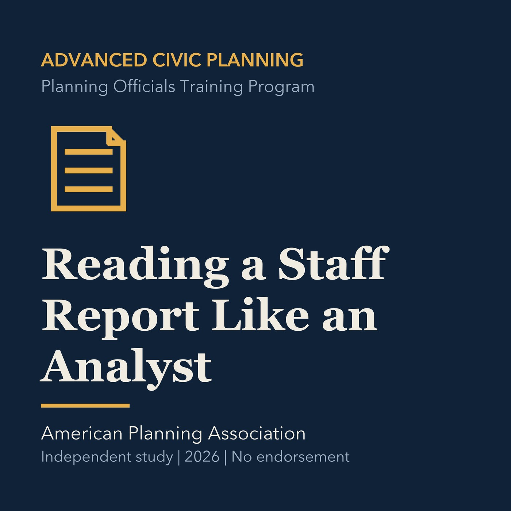

EPISODE 01
Reading a Staff Report Like an Analyst
A method for testing authority, evidence, findings, and conditions in a planning staff report.

- Stable GUID
266549d3-58f7-590d-8314-d8769c42e458- Release
- advanced-civic-planning-v2026.3
- SHA-256
81dc1f246f26d7f80229a770e9dca010339cfab4a65d0f01d6fdc81d4e85fa37